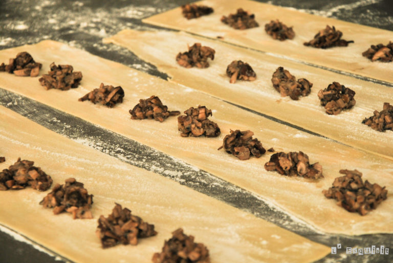
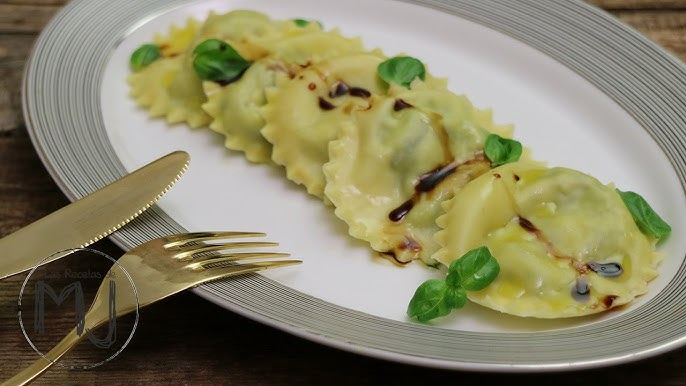

Ravioles de trufa con salsa de champiñones y nueces
Recetas
Recetas
- Ingredientes
- Para la masa de los ravioles:
- 300 g de harina de trigo
- 3 huevos
- 1 cucharada de aceite de oliva
- 1 pizca de sal
- Para el relleno:
- 250 g de ricotta
- 100 g de champiñones trufados (o champiñones comunes)
- 50 g de queso parmesano, rallado
- 1 huevo
- Sal y pimienta al gusto
- Unas gotas de aceite de trufa (opcional)
- Para la salsa de champiñones y nueces:
- 200 g de champiñones, en láminas
- 50 g de nueces, troceadas
- 2 dientes de ajo, picados
- 200 ml de nata (crema de leche)
- 50 g de queso parmesano, rallado
- Sal y pimienta al gusto
Instrucciones
- Paso 1: Preparar la masa de los ravioles
- En un bol grande, mezcla la harina y la sal. Haz un hueco en el centro y agrega los huevos y el aceite de oliva.
- Mezcla con un tenedor hasta que se forme una masa. Amasa durante unos 10 minutos hasta que esté suave y elástica. Cubre con film plástico y deja reposar 30 minutos.
- Paso 2: Preparar el relleno
- Pica finamente los champiñones trufados y sofríelos en una sartén con un poco de aceite hasta que estén dorados. Deja enfriar.
- En un bol, mezcla la ricotta, los champiñones sofritos, el queso parmesano, el huevo, sal, pimienta y unas gotas de aceite de trufa. Reserva
- Paso 3: Formar los ravioles
- Divide la masa en dos partes y estira cada parte con un rodillo o una máquina de pasta hasta que esté muy fina.
- Coloca cucharaditas del relleno sobre una de las láminas de pasta, dejando espacio entre cada porción. Humedece los bordes con agua y coloca la otra lámina de pasta encima. Presiona bien para sellar y corta los ravioles con un cortador.
- Cocina los ravioles en agua hirviendo con sal durante 3-4 minutos o hasta que floten. Escurre y reserva.
- Paso 4: Preparar la salsa
- En una sartén grande, calienta el aceite de oliva a fuego medio. Agrega el ajo y sofríe hasta que esté dorado.
- Añade los champiñones y cocina hasta que estén tiernos. Agrega las nueces y cocina un par de minutos más.
- Incorpora la nata y el queso parmesano, y cocina a fuego lento hasta que la salsa espese. Sazona con sal y pimienta.
- Paso 5: Montaje
- Sirve los ravioles en platos, vierte la salsa de champiñones y nueces por encima y decora con perejil picado.

